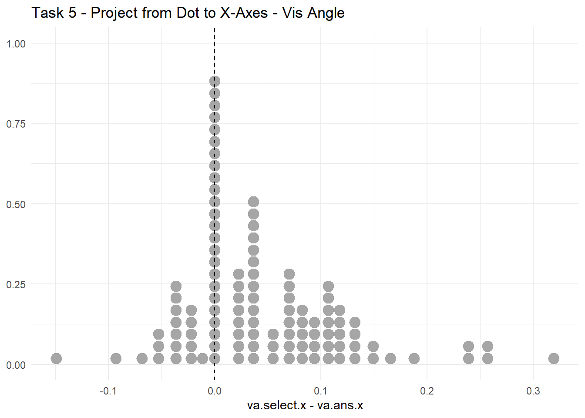

Models can be fitted in visual angle space, as well as physical space
Within each space, the effect of “distance to the other axis” could be multiplicative or additive. This is thoroughly investigated using task 3. The model performing model is one where we assume error ~ N(mu, sigma) where mu is non-zero (i.e., biased), and log(sigma) = beta + d_i or in other words, sigma = exp(beta) * d_i
Task 5.X — Project from dot to X axes
Distribution of signed error:
Code
task5_df %>%ggplot(aes(x = va.select.x - va.ans.x)) +geom_dots() +geom_vline(xintercept =0, linetype="dashed", color="black") +labs(title="Task 5 - Project from Dot to X-Axes - Vis Angle")

Relationship between signed error (in visual angle space) and distance to X-axes:
Code
task5_df %>%ggplot(aes(y = va.ans.y, x = va.select.x - va.ans.x)) +geom_point(alpha =0.5) +geom_vline(xintercept =0, linetype="dashed", color="gray") +labs(title="Task 5 - Project from Dot to X-Axes - Vis Angle")
Family: gaussian
Links: mu = identity; sigma = log
Formula: error_va ~ 0
sigma ~ 1 + offset(log.va.ans.y)
Data: . (Number of observations: 108)
Draws: 4 chains, each with iter = 2000; warmup = 1000; thin = 1;
total post-warmup draws = 4000
Regression Coefficients:
Estimate Est.Error l-95% CI u-95% CI Rhat Bulk_ESS Tail_ESS
sigma_Intercept -4.25 0.07 -4.38 -4.11 1.00 1536 1998
Draws were sampled using sampling(NUTS). For each parameter, Bulk_ESS
and Tail_ESS are effective sample size measures, and Rhat is the potential
scale reduction factor on split chains (at convergence, Rhat = 1).
Output of model 'model5.x.no.bias':
Computed from 4000 by 108 log-likelihood matrix.
Estimate SE
elpd_loo 120.3 9.1
p_loo 1.2 0.4
looic -240.6 18.3
------
MCSE of elpd_loo is 0.0.
MCSE and ESS estimates assume MCMC draws (r_eff in [0.4, 0.4]).
All Pareto k estimates are good (k < 0.7).
See help('pareto-k-diagnostic') for details.
Output of model 'model5.x.bias':
Computed from 4000 by 108 log-likelihood matrix.
Estimate SE
elpd_loo 133.1 8.8
p_loo 2.1 0.5
looic -266.2 17.6
------
MCSE of elpd_loo is 0.0.
MCSE and ESS estimates assume MCMC draws (r_eff in [0.6, 1.0]).
All Pareto k estimates are good (k < 0.7).
See help('pareto-k-diagnostic') for details.
Model comparisons:
elpd_diff se_diff
model5.x.bias 0.0 0.0
model5.x.no.bias -12.8 3.9
Family: gaussian
Links: mu = identity; sigma = log
Formula: error_va ~ 0
sigma ~ 1 + offset(log.va.ans.x)
Data: . (Number of observations: 108)
Draws: 4 chains, each with iter = 2000; warmup = 1000; thin = 1;
total post-warmup draws = 4000
Regression Coefficients:
Estimate Est.Error l-95% CI u-95% CI Rhat Bulk_ESS Tail_ESS
sigma_Intercept -4.35 0.07 -4.49 -4.21 1.00 1356 1922
Draws were sampled using sampling(NUTS). For each parameter, Bulk_ESS
and Tail_ESS are effective sample size measures, and Rhat is the potential
scale reduction factor on split chains (at convergence, Rhat = 1).
f <-bf(error_va ~1, sigma ~1+offset(log.va.ans.x)) # what's the difference between this and 0 + offset(log(va.ans.x)) ???p <-c(prior(normal(0, 1), class = Intercept), prior(normal(0, 1), class = Intercept, dpar = sigma))
Output of model 'model5.y.bias':
Computed from 4000 by 108 log-likelihood matrix.
Estimate SE
elpd_loo 98.4 10.0
p_loo 2.6 0.9
looic -196.8 20.0
------
MCSE of elpd_loo is 0.0.
MCSE and ESS estimates assume MCMC draws (r_eff in [0.7, 1.0]).
All Pareto k estimates are good (k < 0.7).
See help('pareto-k-diagnostic') for details.
Output of model 'model5.y.no.bias':
Computed from 4000 by 108 log-likelihood matrix.
Estimate SE
elpd_loo 96.0 9.4
p_loo 1.4 0.5
looic -191.9 18.8
------
MCSE of elpd_loo is 0.0.
MCSE and ESS estimates assume MCMC draws (r_eff in [0.3, 0.5]).
All Pareto k estimates are good (k < 0.7).
See help('pareto-k-diagnostic') for details.
Model comparisons:
elpd_diff se_diff
model5.y.bias 0.0 0.0
model5.y.no.bias -2.5 2.7
There is not much difference between the one with bias and the one without bias …
Task 3 – Find point on curve where y == 0.5
First we get the data:
task3_df <- single_pid_df %>%filter(task =="task3") %>%select(-slider.x, -slider.y) %>%left_join(participants, by =join_by(participantId)) %>%# do all the calculations for user's selectedmutate(pixel.select.x =data_to_pixel_x(data.select.x),pixel.select.y =data_to_pixel_y(data.select.y),phy.select.x =pixel_to_phy_x(pixel.select.x, pixelToMM),phy.select.y =pixel_to_phy_y(pixel.select.y, pixelToMM),va.select.x =vis_angle(phy.select.x, dist_to_screen),va.select.y =vis_angle(phy.select.y, dist_to_screen)) %>%mutate(data.ans.y =0.5,data.ans.x =qsgt(0.5, param.mu, param.sigma, param.lambda, param.p, param.q, mean.cent =FALSE)) %>%# do all the calculations for the actual answermutate(pixel.ans.x =data_to_pixel_x(data.ans.x),pixel.ans.y =data_to_pixel_y(data.ans.y),phy.ans.x =pixel_to_phy_x(pixel.ans.x, pixelToMM),phy.ans.y =pixel_to_phy_y(pixel.ans.y, pixelToMM),va.ans.x =vis_angle(phy.ans.x, dist_to_screen),va.ans.y =vis_angle(phy.ans.y, dist_to_screen))
Verify that the scales are correct:
Code
# verify that the results are of correct scaletask3_df %>%ggplot(aes(x = data.select.x - data.ans.x)) +geom_dots()
Family: gaussian
Links: mu = identity; sigma = log
Formula: error_va ~ 0
sigma ~ 1 + offset(log.va.ans.x)
Data: . (Number of observations: 110)
Draws: 4 chains, each with iter = 2000; warmup = 1000; thin = 1;
total post-warmup draws = 4000
Regression Coefficients:
Estimate Est.Error l-95% CI u-95% CI Rhat Bulk_ESS Tail_ESS
sigma_Intercept -4.27 0.07 -4.40 -4.13 1.00 1701 2159
Draws were sampled using sampling(NUTS). For each parameter, Bulk_ESS
and Tail_ESS are effective sample size measures, and Rhat is the potential
scale reduction factor on split chains (at convergence, Rhat = 1).
f <-bf(error_va ~1, sigma ~1+ va.ans.x, family =brmsfamily("gaussian", link_sigma ="identity"))p <-c(prior(normal(0, 1), class = Intercept),prior(lognormal(0, 1), class = Intercept, dpar = sigma), prior(lognormal(0, 1), class = b, dpar = sigma))
model.3.bias.alpha <- task3_df %>%mutate(error_va = va.select.y - va.ans.y, log.va.ans.x =log(va.ans.x)) %>%brm(formula = f,data = .,family =gaussian(),prior = p,chains =4,file ="models/task3.bias.alpha",file_refit ="on_change", save_pars =save_pars(all=TRUE), iter =4000, # increased because even with adapt_delta its still running into divergent transitions control =list(adapt_delta =0.99) # model runs into divergent transitions without this )
Check fit and poseterior:
summary(model.3.bias.alpha)
Family: gaussian
Links: mu = identity; sigma = identity
Formula: error_va ~ 1
sigma ~ 1 + va.ans.x
Data: . (Number of observations: 110)
Draws: 4 chains, each with iter = 4000; warmup = 2000; thin = 1;
total post-warmup draws = 8000
Regression Coefficients:
Estimate Est.Error l-95% CI u-95% CI Rhat Bulk_ESS Tail_ESS
Intercept -0.03 0.01 -0.05 -0.01 1.00 3478 3372
sigma_Intercept -0.02 0.02 -0.06 0.03 1.00 3705 4485
sigma_va.ans.x 0.02 0.00 0.01 0.02 1.00 3211 3907
Draws were sampled using sampling(NUTS). For each parameter, Bulk_ESS
and Tail_ESS are effective sample size measures, and Rhat is the potential
scale reduction factor on split chains (at convergence, Rhat = 1).
Output of model 'model.3.no.bias.no.alpha':
Computed from 4000 by 110 log-likelihood matrix.
Estimate SE
elpd_loo 82.3 8.1
p_loo 1.0 0.3
looic -164.7 16.1
------
MCSE of elpd_loo is 0.0.
MCSE and ESS estimates assume MCMC draws (r_eff in [0.4, 0.6]).
All Pareto k estimates are good (k < 0.7).
See help('pareto-k-diagnostic') for details.
Output of model 'model.3.no.bias.alpha':
Computed from 4000 by 110 log-likelihood matrix.
Estimate SE
elpd_loo 81.4 8.0
p_loo 1.9 0.6
looic -162.9 16.0
------
MCSE of elpd_loo is 0.0.
MCSE and ESS estimates assume MCMC draws (r_eff in [0.2, 0.6]).
All Pareto k estimates are good (k < 0.7).
See help('pareto-k-diagnostic') for details.
Output of model 'model.3.bias.no.alpha':
Computed from 4000 by 110 log-likelihood matrix.
Estimate SE
elpd_loo 84.9 7.9
p_loo 1.9 0.4
looic -169.8 15.8
------
MCSE of elpd_loo is 0.0.
MCSE and ESS estimates assume MCMC draws (r_eff in [0.7, 0.8]).
All Pareto k estimates are good (k < 0.7).
See help('pareto-k-diagnostic') for details.
Output of model 'model.3.bias.alpha':
Computed from 8000 by 110 log-likelihood matrix.
Estimate SE
elpd_loo 83.8 8.1
p_loo 3.0 0.8
looic -167.6 16.1
------
MCSE of elpd_loo is 0.0.
MCSE and ESS estimates assume MCMC draws (r_eff in [0.3, 0.7]).
All Pareto k estimates are good (k < 0.7).
See help('pareto-k-diagnostic') for details.
Model comparisons:
elpd_diff se_diff
model.3.bias.no.alpha 0.0 0.0
model.3.bias.alpha -1.1 1.1
model.3.no.bias.no.alpha -2.6 2.4
model.3.no.bias.alpha -3.5 2.4
Hmm the standard deviations are almost the same size as the actual one … well still it’s good to know that bias + no alpha is the best option.